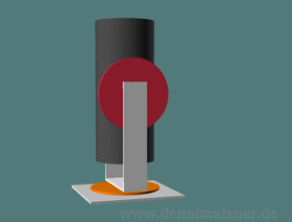
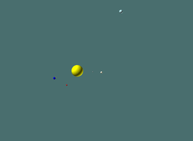
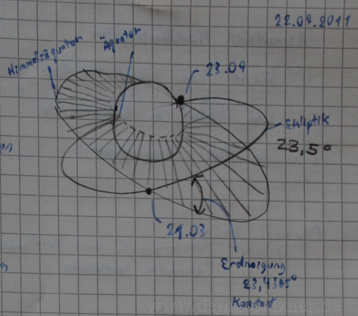
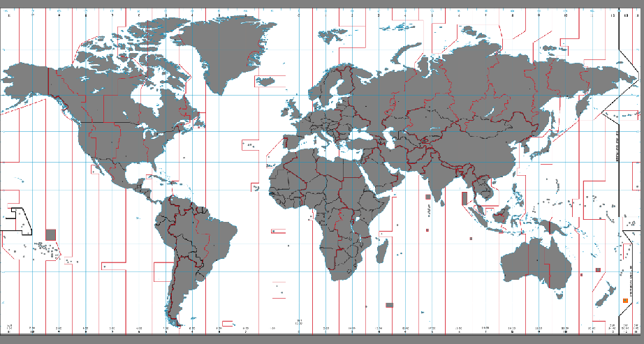
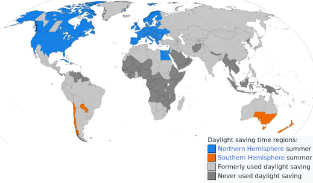
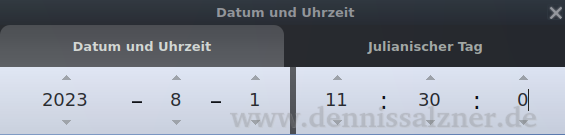
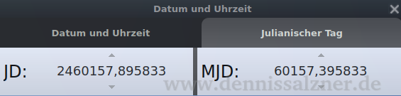
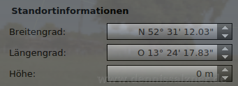
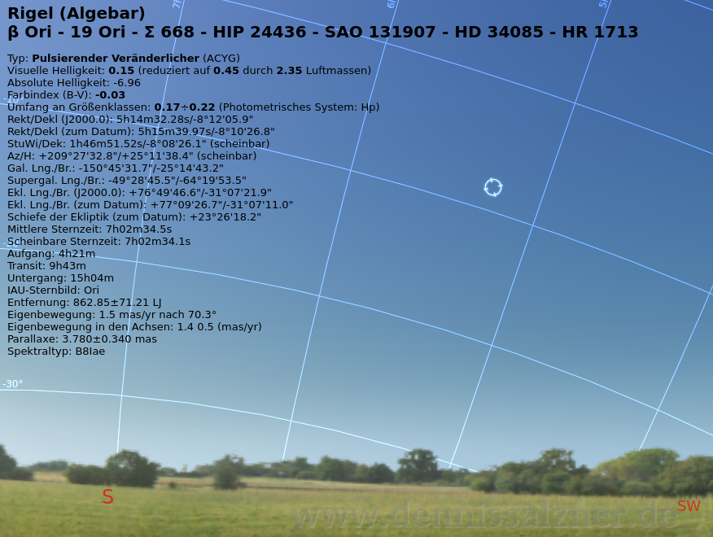
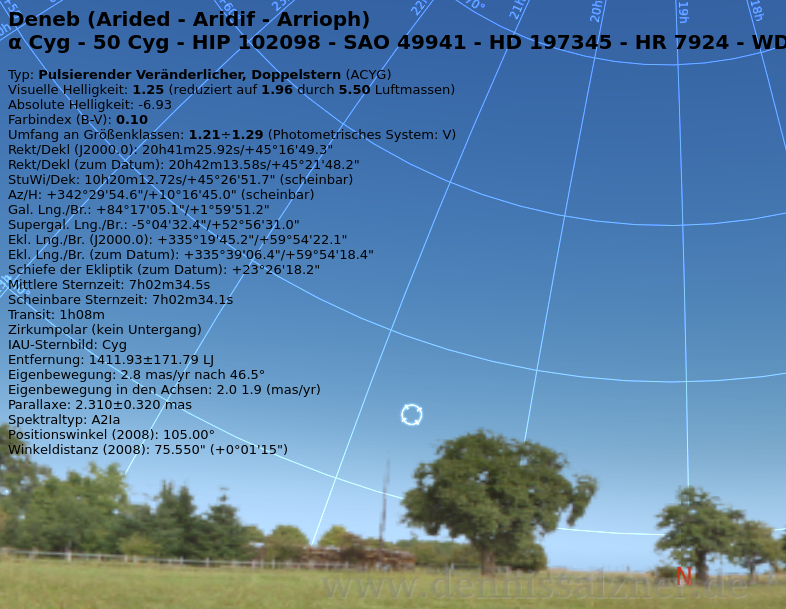

What
Calculating positions of stars
When looking up at the sky we see that the stars move. If we want to point a telecope at a star we find that it not only moves out of the field of view, but is in a different location every night.

With star cards or software or astronomy software we can get the current azimuth (angle from North) and altitude/elevation (angle from ground) at a given location and time.
But how does the math behind this work?
Contents
When
Telescope Mounts
There are different telecope mounts with the most basic being the “dobsonian mount” or “alt-azimuth mount”.
With this kind of mount we need to set the azimuth and altitude and adjust them as we are viewing.

There are also equatorial mounts. With an equatorial mount the same degrees of freedom are set, but the entire mount is tilted against the axis of the earth. A motor that turns against the rotation of the earth works against the stars moving out of the field of view.
Why
But no mater the mount, unless it is fully motorized and “GoTo”-capable, we need to know where to point our telescope. We can look for star constellations and manually point the telescope in that direction, but it would be a lot easier, if we knew the exact angle from north (azimuth) and the angle from the ground (elevation) of the object we want to view.
Background
Solar System
So how does this motion of the stars come about?
As it turns out, this was some 2,5 thousand years ago, astronomers, by viewing the night sky and recording positions of stars, found that it’s not the stars that move, but it’s our planet earth that moves around the sun while rotating around its own axis.
The earth (in blue in the image) moves around a star, the sun. The stars, in the grand scheme of things, hardly move at all in relation to one another.
In order to calculate the position of a star on the night sky when viewing from earth, we need to take the observers location on earth, viewing direction and time into account.
 (generated by code based on [1])
Representations of location
The first thing we need to think about is how we represent positions of stars. For this we need to look into coordinate systems that are used to locate them.
Coordinate Systems
Since it’s us moving and not the stars it makes sense to define a better coordinate system to locate stars. With that better coordinate system we can then, for a given time and place, convert it into our azimuth (angle from North) and altitude/elevation (angle from ground) system. With that information we know where to point our telescope.
That better coordinate system should have a center point that is stationary with respect to the stars. Ideally the coordinate of a given star in that coordinate system should always be the same.
A good overview of coordinate systems is given on Wikipedia [2].
| Coordinate System | Coordinate | Center Point (Origin) |
|---|---|---|
| alt-az | angle from north (azimuth) angle from ground (elevation) |
Observer |
| equatorial | right ascension or hour angle declination |
Center of the Earth (at vernal equinox) or Sun |
The equatorial coordinate system fullfills this requirement. The location of a given star is given as right ascension (RA) and declination (DEC) and these values remain constant.
| Star | Right Ascension | Declination |
|---|---|---|
| Rigel A | 5h 14m 32,3s | −8° 12’ 5.9” |
in Decimal Degrees:
| Star | Right Ascension | Declination |
|---|---|---|
| Rigel A | 78.63° | 8.2° |
Time, Angles and Position
It’s important to understand that in astronomy, time and position, are interchangably represented by angles.
- the earth rotates around it’s own access roughly every 24 Hours (= 1 day)
- the earth rotates around the sun in roughly 365 days (= 1 year)
and
- 24 Hours corresponds to a 360 degree rotation around the earths axis.
- And 356 days corresponds to a 360 degree roation around the sun.
A point
- in a cartesian coorindate system is given by (x, y, z).
- the same point can be given by vector (angle around Y axis (=azimuth), angle around Z axis (=elevation) and length)
Center point of the equatorial coorindate system
To use the equatorial coordinate system, and in order to convert from Azimuth/Elevation to it, we need to understand where it’s center of origin is.
For this astronomers use the “solar equinox” (german: “Äquinoktium”, from Latin “Night” and “Equal” or “Tagundnachtgleiche”). It is a time of the year when the night and day have the same duration.
In astronomy this “solar equinox is the moment in time when the Sun crosses the Earth’s equator”. Or in other words when the location of the earth is where the ecliptic plane (=orbital plane of the earth around the sun) crosses the equator plane of the earth.
This occurs twice a year on around the 20st of March and around the 23rd of September as you can see in this image from 12 years ago.

Your location on earth
Additionally, to compute the azimuth and declination of a star from your viewing point, we need to take into account your location. After all a star would be in a different location, if you are on the other side of the planet (and not visible, because the earth is inbetween you and the star).
For this we use Longitude and Latitude.
Examples in the common Degrees, Minutes, Seconds (DMS) notation are:
| Location | DMS Latitude | DMS Longitude |
|---|---|---|
| Berlin | 52° 31’ 12.0288” N | 13° 24’ 17.8344” E |
| Paris | 48° 51’ 52.9776” N | 2° 20’ 56.4504” E |
But for calculations we use the decimal representation:
| Location | Latitude | Longitude |
|---|---|---|
| Berlin | 52.520008 | 13.404954 |
| Paris | 48.864716 | 2.349014 |
Representations of time
Our day to day system for communicating time is more than inconvenient for calculations.
| Value | Range |
|---|---|
| Seconds | 0-60 |
| Minutes | 0-60 |
| Hours | 0-24 or even 0-12am and 0-12pm and time zones |
| Days | 1-29, 30, 31 depending on the Month of the year and leap years |
| Month | 1 - 12 |
| Year | positive of negative number depending on BC or AC |
Most values have a different range depending on conditions on other values. There are leap years and leap seconds. The set of (h:m:s d:M:Y) does not increment evenly.
Additionally we have to deal with time zones. They were arbitrarly decided upon and so time zone boundaries run unevenly.
 (image source [8])
Some countries use daylight savings time, while other do not. Even the day and time on which countries choose to switch is arbitrary.
 (image source [4])
So the first step has to be to convert date and time into something more usable. For this Universal Time and the Julian Date is commonly used.
Univeral Time
First we need to get rid of time zones and daylight savings time.. For this we take the local time and offset it by the Univeral Time Offset. For Berlin it is 3 hours.
Notice how, with the same universal time, the local time in Paris on the 1st January is differnt to the local time on the 1st of August. This is due to daylight savings time.
| Local Time | Local Date | Location | Universal Time |
|---|---|---|---|
| 11:30 | 1. Aug 2023 | Berlin | 9:30 |
| 10:30 | 1. Jan 2023 | Paris | 9:30 |
| 11:30 | 1. Aug 2023 | Paris | 9:30 |
| 10:30 | 1. Aug 2023 | London | 9:30 |
| 11:30 | 1. Aug 2023 | Madrid | 9:30 |
Julian Date
With the universal time, that is invariant of the time zones and the daylight savings time, we can calculate the Julian Date. The Julian Date is a single evenly incrementing decimal number and gets us away from leap years and seconds.
The Julian Date is the number of days since the January 1st 4713 BC at 12:00 Uhr Universal Time. It is a decimal number. The values after the dot repesent fractions of a day.
| Date (Universal Time) | Time (Universal Time) | Julian Date |
|---|---|---|
| A.D. 2023 August 1 | 09:30:00.0 | 2460157.895833 |
| A.D. 2023 August 2 | 09:30:00.0 | 2460158.895833 |
| A.D. 2023 August 12 | 09:30:00.0 | 2460168.895833 |
| A.D. 2023 August 1 | 12:30:00.0 | 2460158.020833 |
Sidereal Time
Sidereal Time is the angle in hours from the vernal equinox. We can convert from the Julian Date to the sidereal time and then use the sidereal time to calculate the actual position of the star.
It accounts for all the motion and rotation of the earth. In other words: for a specific location and sidereal time the night sky will look the same.
Note that the equations to convert from JulianDate to Sidereal work for the date, but not for time. We calculate the JulianDate at 0:00 and use that to compute the sidereal time at greenwich obsevatory at 0:00. We can then add local time and local location longitudinal offset.
Then we add our time offset and longitude offset to get local sidereal time.
| DateTime UTC | DMS Latitude | DMS Longitude | Greenwich 0h Sidereal Time | Local Sidereal Time |
|---|---|---|---|---|
| 1. Aug 2023 9:30 | 52° 31’ 12.0288” N | 13° 24’ 17.8344” E | 20:37:22.39818407072562 | 7:2:33.22359767072271 |
| 1. Aug 2023 10:30 | 52° 31’ 12.0288” N | 13° 24’ 17.8344” E | 20:37:22.39818407072562 | 8:2:43.08006647072375 |
| 1. Aug 2023 20:30 | 52° 31’ 12.0288” N | 13° 24’ 17.8344” E | 20:37:22.39818407072562 | 18:4:21.644754470734142 |
How
Testing Data
In order to properly test the calculation it makes sense to gather some data points. In the ancient times we would have to watch the night sky for years and minutely measure and document the positions of the stars relativ to the viewing point. Luckily there is software that already has the equations implemented. I’m using the free astronomy software “Stellarium” to create data for verification.
For this we pause the simulation and set the following date and time
| Local Time | Local Date | Location |
|---|---|---|
| 11:30 | 1. Aug 2023 | Berlin |

In the other tab see that also Stellarium computes the Julian Date to 2460157.895833.

We set the location to
| Location | DMS Latitude | DMS Longitude |
|---|---|---|
| Berlin | 52° 31’ 12.0288” N | 13° 24’ 17.8344” E |
Stellarium rounds a bit

By entering the star into the search field we can display the information from the computation performed by Stellarium.
 
Notice that Stellarium performs more exact calculations. Amongst other things it takes variances of the angle of the ecliptic plane to the equatorial plane into account.
Stellarium computes the mean sidereal time to:
| Name | Value |
|---|---|
| Mean Sidereal Time | 7:02:34.5 |
and the star positions to:
| Star | Right Ascension (J2000.0) | Declination (J2000.0) | Apparant Azimuth | Apparant Elevation |
|---|---|---|---|---|
| Rigel | 05h 14m 32,3s | −8° 12’ 05.9” | +209° 27’ 32.8” | +25° 11’ 38.4” |
| Deneb | 20h 41m 26s | +45° 16’ 49” | +342° 29’ 53.6” | +10° 16’ 45.0” |
We expect our computation to output similar values.
Implementation
With the above background information and values for testing we can now move to the implementation.
Overview
Days, Months, Years"] inTime_hms["Input Time
Hours, Minutes, Seconds"] inLon_dms["Input Longitude
Degrees, Minutes, Seconds"] inLat_dms["Input Latitude
Degrees, Minutes, Seconds"] inStarRa_hms["Input Star Right Ascension
Hours, Minutes, Seconds"] inStarDec_dms["Input Star Declination
Degrees, Minutes, Seconds"] inLon_dms --> lon_deg inLat_dms --> lat_deg lon_deg --> offsetUtc_h lat_deg --> offsetUtc_h inDate_dms --> dateTimeUtc_dmshms inTime_hms --> dateTimeUtc_dmshms offsetUtc_h --> dateTimeUtc_dmshms dateTimeUtc_dmshms --> julianDateAt0h_h julianDateAt0h_h --> siderealTimeGreenwich0h_h siderealTimeGreenwich0h_h --> siderealTimeGreenwichNow_h dateTimeUtc_dmshms --> timeSince0h_h timeSince0h_h --> siderealTimeGreenwichNow_h lon_deg --> lon_h siderealTimeGreenwichNow_h --> siderealTimeLocationNow_h lon_h --> siderealTimeLocationNow_h inStarRa_hms --> starRa_deg starRa_deg --> starRa_rad inStarDec_dms --> starDec_deg starDec_deg --> starDec_rad siderealTimeLocationNow_h --> siderealTimeLocationNow_rad lat_deg --> lat_rad starRa_rad --> compute starDec_rad --> compute siderealTimeLocationNow_rad --> compute lat_rad --> compute compute --> current_az_rad compute --> current_el_rad style current_az_dms fill:#c0c0c0 style current_el_dms fill:#c0c0c0 current_az_rad --> current_az_deg current_az_deg --> current_az_dms current_el_rad --> current_el_deg current_el_deg --> current_el_dms
Code
It took me some time to get this right and I found that we need to be rigorous with our math. Here are some learnings:
- for testing input and output values have to be correct to the decimal
- there are many conversions and we need to watch out for corner cases like negative degrees, arcminutes, arcseconds
- it pays off to calculate primarily in decimal hour angles for time, as these can be easily converted to degrees
- for trigonometry we need radians
- choosing the wrong unit to represent the numbers will introduce rounding errors and break numerical stability
- even seemlingly simple tasks such as computing the ellapsed time between two dates can go horribly wrong, so always use the libraries the programming language provides. They take care of value ranges (e.g. number of days in a month), leap years and also leap seconds.
- use online calculators to verify every step and, during development, assert the intermediate results in your code
- we’re dealing with a lot of variables, so use consistant naming and add units to not mix them up
- keep it simple and stupid
- do the calculations step-by-step, effectively dividing and conquering the problem
Input Parameters
date_dmy=(1, 8, 2023)
time_hms=(11, 30, 0)
lat_dms=(52, 31, 12.0288)
lon_dms=(13, 24, 17.8344)
starRa_hms = (5,14,32,3)
starDec_dms = (-8,12,5.9)Computing Sidereal Time
lon_dms -> lon_deg, lat_dms -> lat_deg
def dmsToDeg(dms):
res = abs(dms[0]) + dms[1] / 60 + dms[2] / 3600
return res if dms[0] > 0 else -res
lon_deg = dmsToDeg(lon_dms)
lat_deg = dmsToDeg(lat_dms)
assert 13.404954 == lon_deg
assert 52.520008 == lat_degdate_dmy, time_hms -> dateTime_dt
import datetime
dateTime_dt = datetime.datetime(
date_dmy[2], date_dmy[1], date_dmy[0],
time_hms[0], time_hms[1], time_hms[2])lat_deg, lon_deg, dateTime_dt -> offsetUtc_dt
import pytz
from tzwhere import tzwhere
tzwhere = tzwhere.tzwhere()
timezone_str = tzwhere.tzNameAt(lat_deg, lon_deg)
timezone = pytz.timezone(timezone_str)
offsetUtc_dt = timezone.utcoffset(dateTime_dt)
assert "Europe/Berlin" == timezone_str
assert "2:00:00" == str(offsetUtc_dt)dateTime_dt, offsetUtc_dt -> dateTimeUtc_dt
dateTimeUtc_dt = dateTime_dt - offsetUtc_dt
assert "2023-08-01 09:30:00" == str(dateTimeUtc_dt)dateTimeUtc_dt -> dateTimeUtc0h_dt
dateTimeUtc0h_dt = dateTimeUtc_dt.replace(hour=0, minute=0, second=0)
assert datetime.datetime(2023,8,1,0,0,0) == dateTimeUtc0h_dtdateTimeUtc0h_dt -> julianDateAt0h_h
at_2000_1_1_dt = datetime.datetime(2000, 1, 1, 0, 0, 0)
julianDateAt0h_h = 2451544.5 + ((dateTimeUtc0h_dt - at_2000_1_1_dt).total_seconds() / (24*60*60));
assert 2460157.5 == julianDateAt0h_hjulianDateAt0h_h -> siderealGreenwich0h_h
def hoursToHms(hour):
s = hour * 3600
m, s = divmod(s, 60)
h, m = divmod(m, 60)
return (h, m, s)
import math
T = (julianDateAt0h_h - 2415020.0) / 36525.0;
SS = 6.6460656 + 2400.051*T + 0.00002581*T*T;
siderealGreenwich0h_h = (SS / 24 - math.floor(SS / 24)) * 24;
assert (20.0, 37.0, 22.39818407072744) == hoursToHms(siderealGreenwich0h_h)siderealGreenwich0h_h -> siderealGreenwichNow_h
timeSince0h_h = dateTimeUtc_dt.hour + dateTimeUtc_dt.minute / 60 + dateTimeUtc_dt.second / 3600
assert 9.5 == timeSince0h_h
siderealGreenwichNow_h = siderealGreenwich0h_h + timeSince0h_hsiderealGreenwichNow_h -> siderealLocationNow_h
lon_h = lon_deg / 15
assert 0.8936636 == lon_h
siderealLocationNow_h = (siderealGreenwichNow_h + lon_h) % 24
assert 7.0165519844640905 == siderealLocationNow_h
# more accurate result would be (7.0, 2.0, 33.22359767072271)
assert (7.0, 0.0, 59.587144070726936) == hoursToHms(siderealLocationNow_h) Compute Position of Star
With the sidereal time we can then compute the current location of the star.
Convert to radians to get siderealLocationNow_rad, starRa_rad, starDec_rad
def degToRad(deg):
return deg * (2 * math.pi / 360)
siderealLocationNow_deg = siderealLocationNow_h * 15
siderealLocationNow_rad = degToRad(siderealLocationNow_deg)
def hmsToDeg(hms):
return (hms[0] + hms[1] / 60 + hms[2] / 3600) * 15
starRa_deg = hmsToDeg(starRa_hms)
assert 78.63333333333333 == starRa_deg
starDec_deg = dmsToDeg(starDec_dms)
assert -8.201638888888889 == starDec_deg
starRa_rad = degToRad(starRa_deg)
starDec_rad = degToRad(starDec_deg)Apply the trigonometry
current_ra_rad = siderealLocationNow_rad - starRa_rad
M = math.atan(math.tan(starDec_rad) / math.cos(current_ra_rad))
lat_rad = degToRad(lat_deg)
current_az_rad = math.atan(math.cos(M) * math.tan(current_ra_rad) / math.sin(lat_rad - M))
current_el_rad = math.asin(math.sin(lat_rad) * math.sin(starDec_rad) + math.cos(lat_rad) * math.cos(starDec_rad) * math.cos(current_ra_rad))
current_az_rad += math.pi # translate from north to southDisplay result
def radToDeg(rad):
return rad * (360 / (2 * math.pi))
current_az_deg = radToDeg(current_az_rad)
current_el_deg = radToDeg(current_el_rad)
def degToDms(deg):
d, m = divmod(deg, 1)
m, s = divmod(m * 60, 1)
return (d, m, s * 60)
current_az_dms = degToDms(current_az_deg)
# more accurate result would be +209° 27' 32.8''
assert (209.0, 20.0, 5.142262798392494) == current_az_dms
current_el_dms = degToDms(current_el_deg)
# more accurate result would be +25° 11' 38.4''
assert (25.0, 9.0, 56.126346981354516) == current_el_dms
print("result | " + str(current_az_dms) + " | " + str(current_el_dms))
print("stellarium | +209° 27' 32.8'' | +25° 11' 38.4'' |")We get
result | (209.0, 20.0, 5.142262798392494) | (25.0, 9.0, 56.126346981354516) stellarium | +209° 27' 32.8'' | +25° 11' 38.4'' |
Which is off by a bit in part due to correctional factors, e.g. for light refraction compared to Stellarium and other calculators.
But also because our siderealLocationNow time is
(7.0, 0.0, 59.587144070726936)
instead of
(7.0, 2.0, 33.22359767072271).
The calculation is close enough to show the calculation method is correct.
Progress
Conclusion
We can calculate the current azimuth and elevation of a star at the time and location of an observer. The similified calculation above is only an approximation, but close enough to explain the calculation steps.
We could use the “HYG Stellar Database” (comes as a *.csv file) and use matplotlib to plot all stars above a certain brightness (apparant magnitude). We could use that brightness as the size of the point in the plot. That would give us a representation of the night sky similar to what other astronomy software shows.
1] https://github.com/cfinke/Solar-System/blob/master/Solar%20System.scad 2] https://en.wikipedia.org/wiki/Astronomical_coordinate_systems#Coordinate_systems 3] https://de.wikipedia.org/wiki/%C3%84quinoktium 4] https://en.wikipedia.org/wiki/Daylight_saving_time 5] https://aa.usno.navy.mil/data/JulianDate 6] http://www.csgnetwork.com/siderealjuliantimecalc.html 7] https://de.wikipedia.org/wiki/Ekliptik 8] https://upload.wikimedia.org/wikipedia/commons/thumb/f/f3/Timezones2008G_UTC%2B1245.png/1920px-Timezones2008G_UTC%2B1245.png